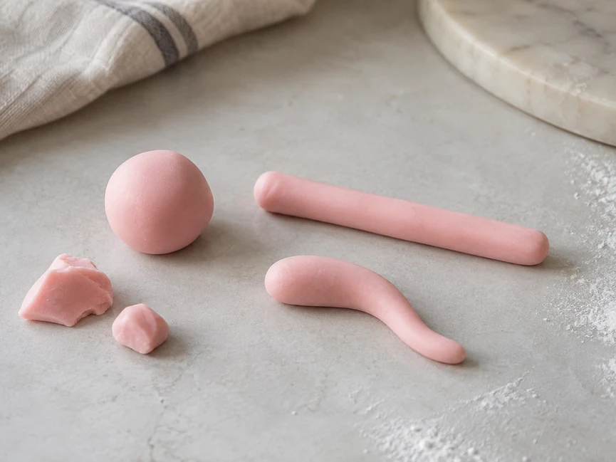
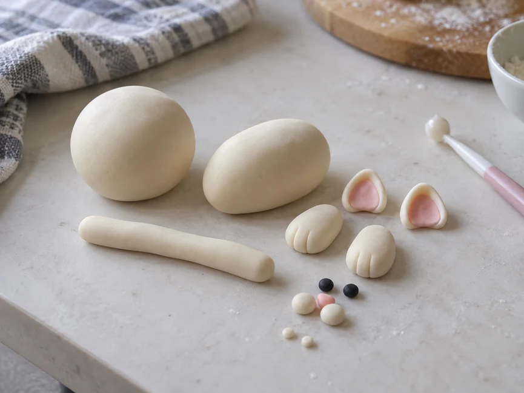
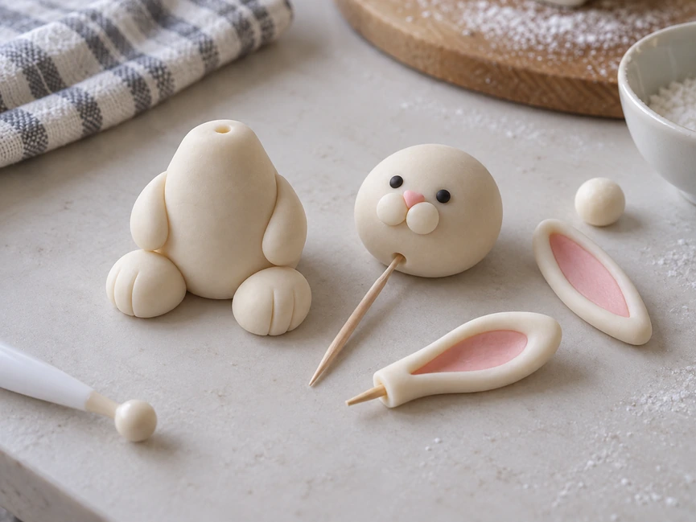
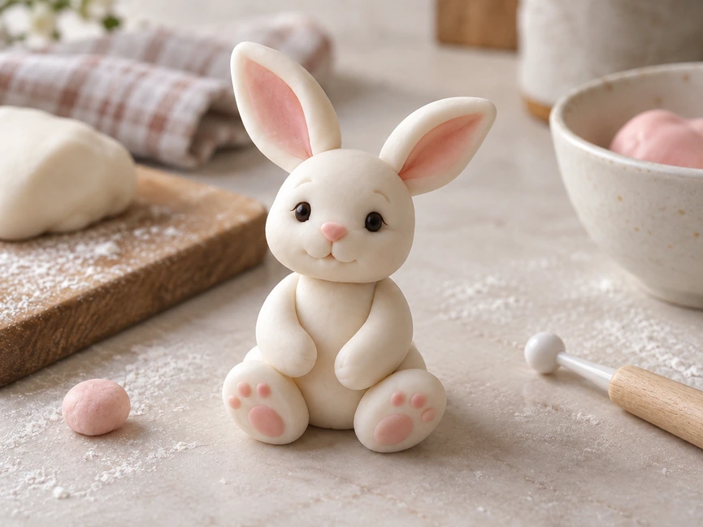

Из мастики можно слепить совсем простую морковку, цветок или небольшого зайчика, а можно собрать сложную фигурку с тонкими ушами, лапками и множеством мелких деталей. Чем сложнее украшение, тем заметнее становится разница между просто мягкой мастикой и массой, которая действительно подходит для лепки.
Если мастика слишком мягкая, фигурка постепенно оседает, уши наклоняются, а мелкие детали теряют форму. Слишком сухая масса создаёт другую проблему — плохо соединяется, крошится и покрывается трещинками.
Для лепки удобнее мастика, которая легко разминается в руках, но после формирования не начинает заметно расплываться. Если вы только начинаете работать с сахарной массой, сначала полезно познакомиться с базовыми принципами в статье «Как работать с мастикой для торта».
Какая мастика лучше подходит для лепки фигурок
Специальная профессиональная масса для первых фигурок совсем не обязательна. Небольшой декор можно сделать и из обычной сахарной мастики, если она достаточно плотная и хорошо держит форму.
Проверить это проще всего на маленьком кусочке. Скатайте ровный шарик, положите его на стол и оставьте на несколько минут. Если он практически не изменил форму, а поверхность осталась гладкой, мастика уже вполне подходит для простой лепки.
Если шарик быстро приплющивается снизу, масса слишком мягкая. Если при раскатывании жгутика появляются трещины, мастика, наоборот, получилась суховатой.
Чем мастика для лепки отличается от мастики для обтяжки
Для обтяжки торта мастику стараются сохранить мягкой и эластичной. Её нужно тонко раскатать, перенести на торт и разгладить по поверхности без разрывов.
При лепке требования немного другие. Из массы делают объёмные детали, которые должны сохранять форму без постоянной поддержки руками. Поэтому мастика для фигурок обычно плотнее той, которой удобно покрывать торт.
Особенно хорошо разница заметна на ушах, руках, хвостах и других выступающих деталях. Мягкий мастичный пласт отлично ложится на торт, но длинное ушко из такой же массы может постепенно согнуться под собственным весом.
Важно!
Не пытайтесь получить нужную плотность, подмешав сразу большое количество сахарной пудры. Мастика перестанет расплываться, но может стать сухой и начать трескаться.
Можно ли лепить из обычной мастики
Можно. Для небольших фигурок этого часто вполне достаточно.
Обычная мастика хорошо подходит для шариков, небольших лапок, глаз, носиков, цветов, морковок и других простых элементов. Из неё можно сделать и полноценную фигурку, если конструкция устойчивая, а сама масса хорошо держит форму.
Дополнительное укрепление чаще требуется, когда появляются длинные тонкие элементы, большая голова, высокая фигурка или детали, которые должны находиться почти горизонтально.
Готовая или домашняя мастика
Оба варианта подходят.
С готовой мастикой проще в том смысле, что её первоначальная консистенция обычно более предсказуема. Домашняя сильнее зависит от конкретного рецепта, количества сахарной пудры и того, насколько долго массу вымешивали.
Например, мастику из маршмеллоу можно использовать и для обтяжки, и для простых фигурок. Разница будет прежде всего в консистенции: для лепки масса должна лучше держать форму.
Поэтому ориентируйтесь не столько на название мастики, сколько на то, как она ведёт себя в руках.
Какой должна быть мастика для фигурок
Хорошая мастика не обязана становиться твёрдой сразу после разминания. Пока вы работаете с ней руками, она остаётся мягкой и пластичной. Важно другое: сформированная деталь не должна заметно расползаться сама по себе.
Попробуйте скатать шарик, сделать небольшой жгутик и слегка вытянуть один его конец. Если заготовки держат форму, поверхность остаётся гладкой, а по краям не появляются глубокие трещины, консистенция подходящая.

Слишком мягкая мастика постепенно проседает. Слишком твёрдая плохо сглаживается и трескается на сгибах.
Нужное состояние находится как раз между этими крайностями.
Как подготовить мастику перед лепкой
Не начинайте работу сразу с большого куска. Отделите столько мастики, сколько нужно для ближайшей детали, а остальную массу заверните или уберите в закрытый пакет.
На воздухе мастика подсыхает достаточно быстро, и особенно неприятно обнаружить это тогда, когда вы переходите к мелким деталям.
Сначала хорошо разомните массу
Холодная или долго лежавшая мастика может казаться гораздо плотнее, чем она есть на самом деле. Несколько минут разминания тёплыми руками делают её более однородной и пластичной.
Поэтому не спешите сразу что-либо добавлять.
Сначала разомните кусочек, сформируйте пробную деталь и только потом решайте, действительно ли массу нужно менять.
Если мастика слишком мягкая
Дайте ей немного полежать и снова проверьте. Иногда мастика становится слишком мягкой просто потому, что хорошо нагрелась в руках.
Если деталь всё равно быстро теряет форму, массу можно осторожно сделать плотнее. Здесь важно двигаться постепенно: проще добавить совсем немного сухого компонента или укрепляющей добавки, чем потом спасать пересушенную мастику.
Нужно ли давать мастике отлежаться
Иногда да.
Домашняя мастика после приготовления может стать более однородной после небольшого отдыха в плотно закрытой упаковке. То же относится к некоторым укрепляющим добавкам: изменение консистенции происходит не всегда сразу.
Универсального времени здесь нет. Составы отличаются, поэтому лучше ориентироваться на состояние самой массы.
Когда нужен КМЦ
Для каждой фигурки добавлять КМЦ не нужно.
Если мастика и без него хорошо держит форму, усложнять работу незачем. КМЦ становится полезным, когда масса слишком мягкая, требуется сделать тонкие детали или нужно, чтобы сформированные элементы быстрее стали устойчивыми.
Подробно о дозировках, принципе действия и возможных заменах читайте в статье «КМЦ для мастики: что это, сколько добавлять и чем заменить».
Совет!
Если вы впервые используете КМЦ с конкретной мастикой, сначала проверьте результат на небольшом кусочке, а не на всей подготовленной массе.
Почему фигурка из мастики не держит форму
Чаще всего причина всё-таки в слишком мягкой мастике. Но не всегда.
Масса может заметно размягчиться после долгого разминания в тёплых руках. В этом случае достаточно отложить её на некоторое время и продолжить работу позже.
На консистенцию может повлиять и большое количество жидкого красителя, особенно если его добавляют сразу много.
При высокой влажности сформированные детали также дольше остаются мягкими.
Есть и чисто конструктивная причина: деталь может быть слишком тяжёлой для своей формы. Большая голова на тонкой шее, длинное ухо или вытянутая лапка способны согнуться даже тогда, когда сама мастика приготовлена правильно.
Наконец, иногда фигурку просто собирают слишком быстро. Для сложного декора удобнее сначала сделать основные элементы, дать им немного стабилизироваться и только после этого соединять.
Как начать лепить фигурки из мастики
Не пытайтесь сразу повторить сложную фигурку с десятками деталей. Большинство персонажей легче представить как набор простых форм.
Голова начинается с шарика, туловище — с шара или овала, лапы и руки можно сделать из небольших жгутиков или вытянутых заготовок. Уже после этого добавляются ушки, глаза, нос, одежда и другие мелочи.

Сначала сделайте крупные части и приложите их друг к другу. Так проще увидеть пропорции ещё до окончательной сборки.
Работайте небольшими кусочками, а основную мастику держите закрытой. Мелкие детали лучше делать отдельно и прикреплять после примерки.
Для соединения мастичных элементов обычно достаточно совсем небольшого количества влаги или подходящего пищевого клея. Поверхность не нужно мочить: избыток жидкости может размягчить место соединения.
Совет!
Перед окончательным креплением приложите детали друг к другу насухо. Сразу станет видно, не слишком ли большая голова, одинаковы ли лапы и сможет ли фигурка устойчиво стоять.
Когда фигурке нужна опора
Небольшие приземистые фигурки часто прекрасно обходятся без какого-либо каркаса.
Другое дело — длинные уши, вытянутые лапы, крылья, хвосты или крупная голова на сравнительно тонком туловище. Одной плотности мастики здесь иногда недостаточно.
В старых мастер-классах Tortopedia для некоторых деталей используются зубочистки: например, ими можно временно усилить соединение головы, туловища или ушей. Для более сложных фигурок применяют и другие внутренние опоры.

Смысл простой: опора помогает детали не сгибаться и не отламываться.
Важно!
Зубочистки, шпажки и другие несъедобные элементы нужно обязательно учитывать при подаче торта и удалять перед употреблением декора.
Армирование при этом не заменяет правильную консистенцию мастики. Если сама масса слишком мягкая, опора поможет удержать деталь, но её поверхность всё равно может деформироваться.
Подробное армирование фигурок — уже отдельная тема. Здесь достаточно знать, что такая техника существует и особенно полезна для сложных и выступающих деталей.
Несколько правил, которые упрощают лепку
- Разомните небольшой кусок мастики и проверьте, держит ли он форму.
- Сначала сделайте крупные детали фигурки.
- Не оставляйте остальную мастику открытой.
- Перед сборкой проверьте пропорции деталей.
- Тонким и тяжёлым элементам при необходимости дайте немного стабилизироваться.
- Используйте внутреннюю опору только там, где она действительно нужна.
- До установки на торт убедитесь, что фигурка достаточно устойчива.
Если хочется сразу попробовать всё на практике, можно начать с простого мастер-класса и посмотреть, как слепить зайку из мастики.

Что делать с фигуркой после лепки
После сборки работа ещё не совсем закончена.
Свежая фигурка остаётся достаточно мягкой, особенно внутри крупных деталей. Ей нужно время, чтобы стать устойчивее. Как долго — зависит от размера, толщины элементов, состава мастики и условий в помещении.
Не стоит пытаться ускорять процесс сильным нагревом или сразу закрывать свежую фигурку в ёмкости, где будет скапливаться влага.
Подробно этот этап разобран в статье «Как сушить фигурки из мастики».
Когда декор полностью высохнет, задача меняется: теперь его нужно защитить от влаги, пыли и повреждений до момента установки на торт. Для этого есть отдельная инструкция «Как хранить фигурки из мастики».
Подготовили мастику → слепили → дали высохнуть → правильно сохранили до использования.
Частые вопросы
Можно ли лепить из мастики для обтяжки?
Да. Если она достаточно плотная и сформированные детали не расплываются, для простых фигурок такой мастики вполне достаточно. При необходимости небольшую часть массы можно подготовить отдельно именно для лепки.
Обязательно ли добавлять КМЦ?
Нет. Для небольших устойчивых фигурок он часто вообще не нужен. КМЦ полезнее для слишком мягкой массы, тонких элементов и деталей, которым требуется дополнительная устойчивость.
Почему фигурка постепенно расплывается?
В первую очередь проверьте плотность мастики. Если масса слишком мягкая, фигурка будет оседать под собственным весом. Также на результат могут влиять нагрев от рук, влажность, жидкий краситель и конструкция самой фигурки.
Можно ли приготовить мастику для фигурок заранее?
Можно, если выбранный рецепт допускает хранение. Главное — хорошо упаковать массу, чтобы она не подсохла. Перед лепкой её снова разминают и обязательно проверяют консистенцию.
Когда фигурку можно ставить на торт?
Не ориентируйтесь только на часы. Фигурка должна уже уверенно держать форму и не деформироваться от лёгкого прикосновения. Крупным и составным украшениям обычно требуется больше времени, чем небольшому простому декору.